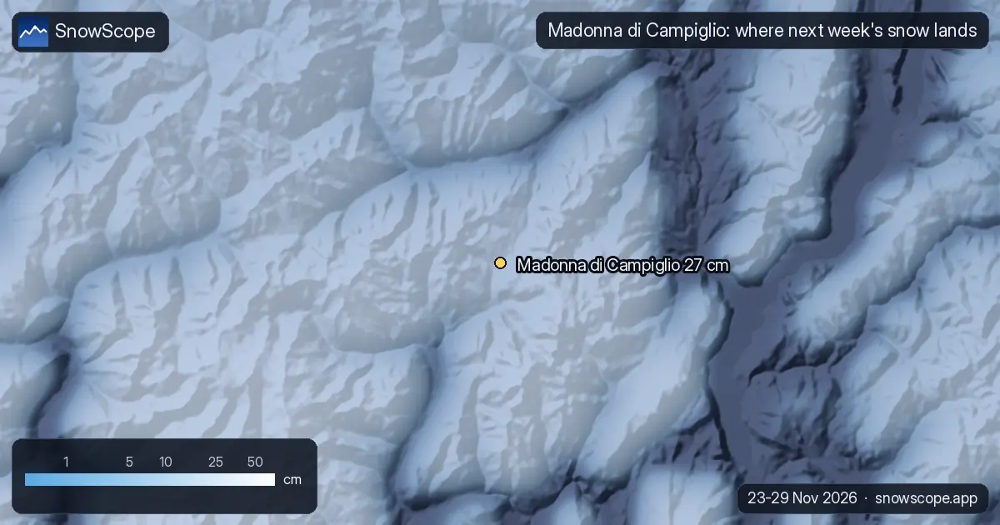

Slovenia snow conditions, 16 November 2026: depth, fresh snow and the next days
In Slovenia, about 1,130 km² of high ground is white today, 80 km² lost since yesterday. That is 15 % of the high ground we map in Slovenia.
See the live snow forecast for Gače in the SnowScope appSnow depth, powder alerts and the 3D map, free.
Snow cover today
A week ago it was 220 km², so the cover has grown by 910 km². The snow line sits near 2,000 m.
| Resort | Snow depth | New snow, 72 h | Coming, next days | Top |
|---|---|---|---|---|
| Gače | 28 cm | 0 cm | 0 cm | 964 m |
| Vogel | 26 cm | 1 cm | 0 cm | 1,731 m |
| Velika planina | 24 cm | 0 cm | 0 cm | 1,664 m |
| Rogla | 17 cm | 0 cm | 0 cm | 1,511 m |
| Golte | 16 cm | 0 cm | 0 cm | 1,570 m |
The latest snowfall
The last three days were dry or nearly so, with no more than 1 cm anywhere.
Low, middle and high ground
Average depth of the snowpack by height band: between 500 and 1,000 m, 1 cm on average, 12 % covered; between 1,000 and 1,500 m, 1 cm on average, 17 % covered; between 1,500 and 2,000 m, 2 cm on average, 35 % covered; between 2,000 and 2,500 m, 6 cm on average, 74 % covered.
On the ground
Mild weather is eating into the cover: expect firm snow in the morning and slush in the afternoon.
Where to ski first
Gače leads with 28 cm on its upper slopes.
Then come Vogel (26 cm), Velika planina (24 cm), Rogla (17 cm) and Golte (16 cm).
Vogel picked up 1 cm in the last three days and could add 0 cm by Thursday 19 November.
Snow lies on the upper slopes of 15 out of 27 resorts in Slovenia.
Snow on the way?
Over the next three days up to 7 cm is expected, and up to 7 cm over the week.
Thursday 19 November stands out, with up to 6 cm in a day.
The second week adds up to 33 cm where it snows most.
Tips for skiers
- Check the resort's own lift status before you travel.
- Read the local avalanche bulletin before going off-piste.
- Fresh snow on a cold base sticks badly: take care on steep slopes.
About these numbers
Resort snow depths are the deepest snow on the resort's upper slopes from the SnowScope snow model (about 1 km, run of 16 November); they are estimates for an area, not a measurement at one point. Station values are measurements on the date shown. Forecasts can change. Always read the official avalanche bulletin before going off-piste.
Cite this report
For research, teaching or the press: the numbers and charts are free to reuse under CC BY 4.0 with this citation.
SnowScope (2026), Slovenia snow conditions, 16 November 2026: depth, fresh snow and the next days, https://snowscope.app/blog/en/2026/11/slovenia-snow-report-16-november-2026.html, accessed 2026-11-16
SnowScope (Atlas Labs). (2026, November 16). Slovenia snow conditions, 16 November 2026: depth, fresh snow and the next days. SnowScope snow reports. https://snowscope.app/blog/en/2026/11/slovenia-snow-report-16-november-2026.html
BibTeX
@misc{snowscope2026sloveniasnowreport16nove,
author = {{SnowScope (Atlas Labs)}},
title = {Slovenia snow conditions, 16 November 2026: depth, fresh snow and the next days},
year = {2026},
month = nov,
howpublished = {\url{https://snowscope.app/blog/en/2026/11/slovenia-snow-report-16-november-2026.html}},
note = {Published 2026-11-16 20:42 UTC; accessed 2026-11-16}
}· CC BY 4.0 · Methods, data and tools →
Gače: snow and temperature by height, this winter vs last (tools) →
Follow Gače
Free: a message when fresh snow is coming, and the forecast every morning.
More snow reports

Madonna di Campiglio snow forecast for 23–29 November 2026: 27 cm at the top (8–46 cm), 23 cm at the base, snowiest day Wednesday 25 November, with neighbours compared.

Livigno snow forecast for 23–29 November 2026: 19 cm at the top (6–31 cm), 16 cm at the base, snowiest day Wednesday 25 November, with neighbours compared.

Next week's fresh snow in Les 2 Alpes: 20–73 cm on the upper slopes and 4–22 cm at the base (23–29 November 2026), best day, best slopes and how sure the forecast is.